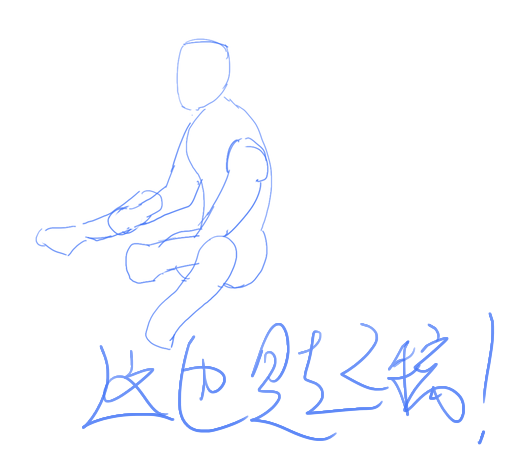
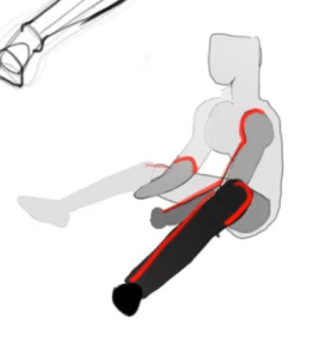
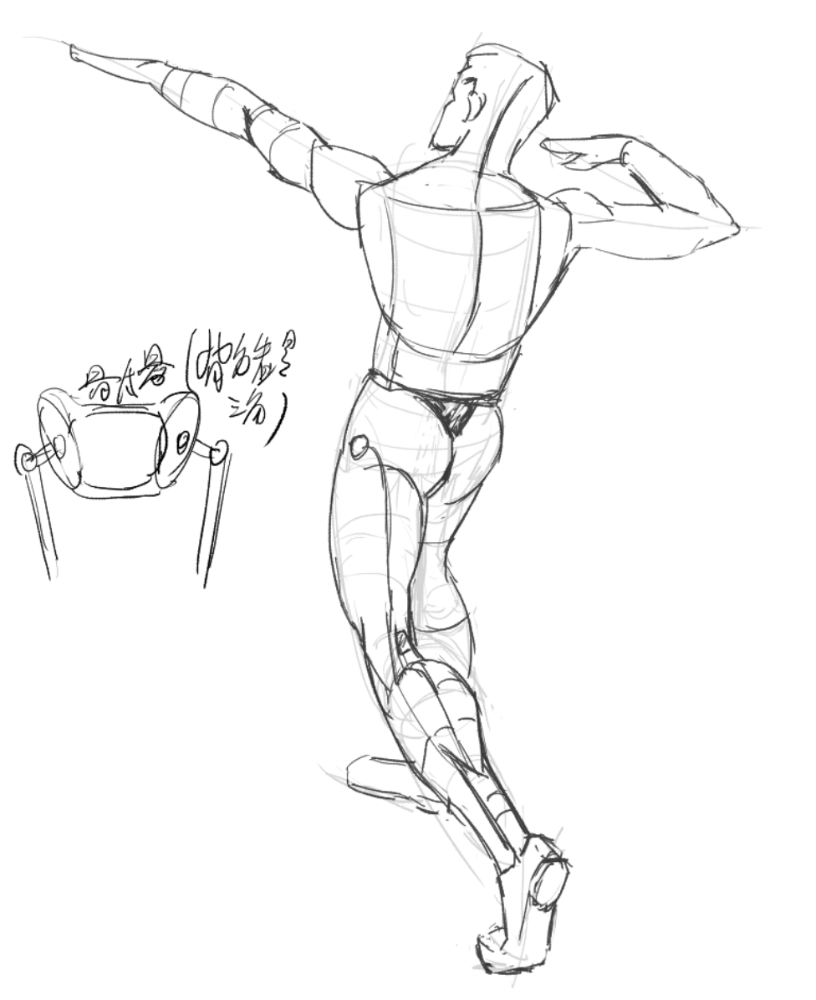
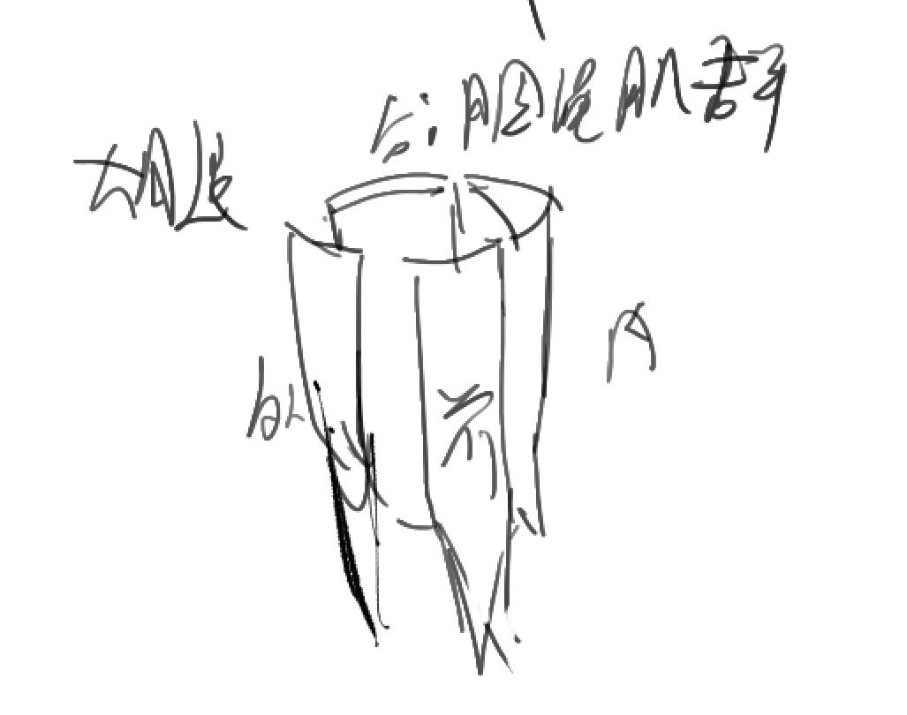
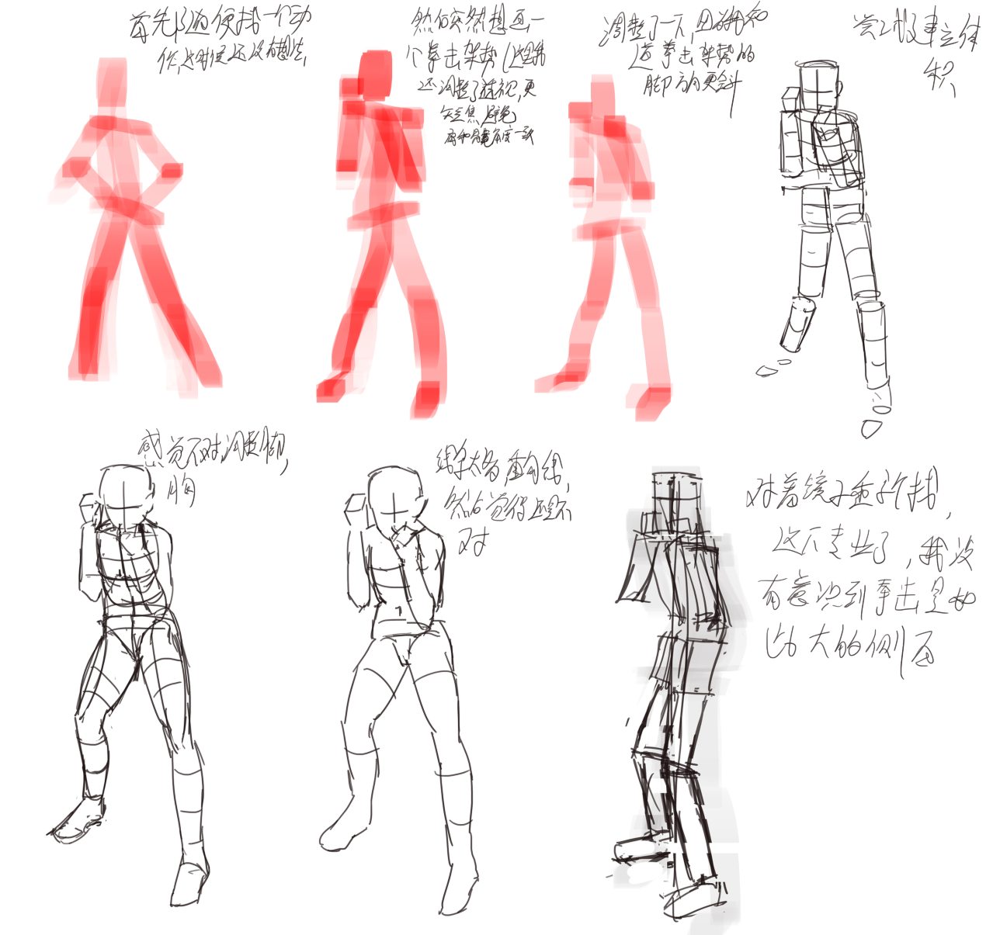
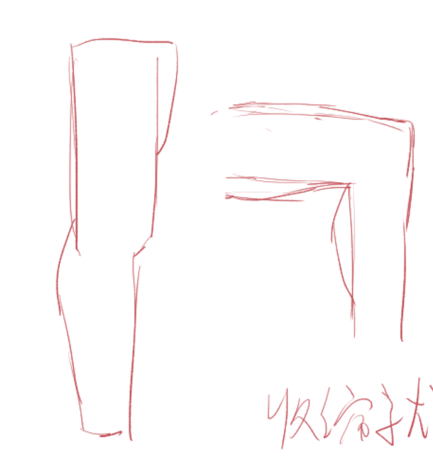
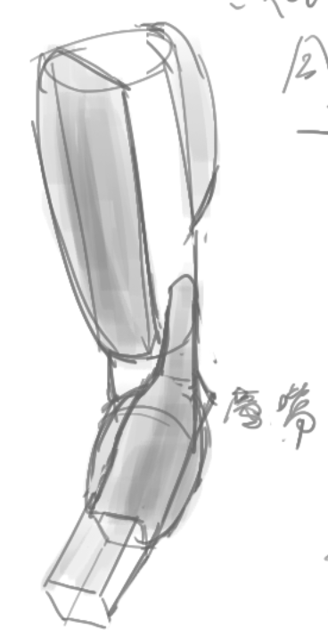

毛厂速写团练第二周笔记
这篇拖了半个星期才记下来……我该增加更多个人的速写练习。
第二周终于是有点立体思维了（其实前两步（的训练）也有立体思维，敢说趋势完全是平面的趋势吗？）。
似乎这一周（或者说从这一周开始），第二步即绘制二维形状就不再做了，而是在这一步就让空间思维上场——使用圆柱去概括人体全身，除了手脚，其中四肢使用真正的圆柱，胸髋使用扁圆柱。手仍旧使用四边形（因为还没讲到？），脚使用之前学到的心智模型——脚跟和前脚掌的面的两个圆。
这时候的流程就是：趋势-shape-form-肌肉细节。
其实关于人体，也是和透视一样——人体同样有“标准解法”，解剖书里，人体模型里展示的清清楚楚，而我们的目的同样不是画的完全精确，而是能骗过眼睛就行（当然，人体更重要的是得生动，活过来，这里说的是在细节上骗过眼睛即可）。不说别的，古希腊的雕塑是完全精确的人体，没经过夸张吗？艺术来源于现实，高于现实。一切艺术家都是骗子，而画家是视觉上的骗子，我们知晓何谓真相（倒并非完全，但至少我们知晓什么不是真相），但我们仍旧为了特定的目的去主动去撒谎。通过“有意识的撒谎”去传递（我们眼中的）真实。
其实一幅速写，最关键的地方，就是那么几个点，把这几个点定好，人体就能搞好。
这一周里，多个老师多次提醒，听不懂没关系，照抄就行，后面会越来越熟悉。
D01
拍摄环节也有意义——让你知道你原创时可以摆什么动作。我觉得这个倒并非很必要。我实际想画啥题材的时候专门去找材料就是了……
图画不好？因为只关注到了细节，因为从其他人的图中只看懂细节没看懂整体。
宁方勿圆。
这里的方，圆并非指的是素描中的方和圆，一个形状究竟是方是圆，要和它所抽象的实际形体作比较才能判断。
无法体现出趋势就是圆——平均，没有型。
方不是边缘方，而是能够把趋势强调出来（即使使用的是一定程度的弧线）。趋势清晰即为方。或者说，趋势就是方，无趋势（就是过于平均，僵化）就是圆。
趋势（很机械地说），就是长度、方向的信息，它就像一个向量。我更喜欢在心里讲“流势”。
第一步画的就是各个身体部位的趋势（流势是各种趋势的有机的组合）。
层次关系——小腿和大腿的遮挡关系比小腿、大腿自己的细节更重要。
锁骨和三角肌（前束、中束）：

锁骨的角度、形状不用管，总之从脖子下面开始，到肩膀顶部结束（大致是……上臂的反方向的位置）
前束起始点大概是锁骨的二分之一，中束附着到上臂也是二分之一左右（注意它是往后绕的）。
画下去的，就是对的，要自信！模特就长这样！
起稿可以相当随意——关键点在于关注趋势，关注整个形状，面积，大形。

熟悉后可以推着画，像AI扩写一样一部分一部分生成下去——这是因为事先在脑子里想好了。
其实我觉得在熟悉了相应形体后，（在定出关键点后）我也能够随着感觉推着画，虽然肯定是不能看的，但这会很自由。
关于大透视的遮挡？比如手指向镜头？解决方法——体块化，思考每个体块的结构（肩膀，大臂，小臂，手，每根手指），把每个部分都画出来，然后擦掉所有遮挡的部分。（我觉得这个思考方式很有实践意义）
层次，脑子里要有空间关系——哪部分离镜头近，哪部分离镜头远。

画出灵动的人体甚至不需要你画出正确的人体结构——即使有明显错误，只要层次做好了，同样会显得很鲜活（这个话可能放广泛看也适用，比如随手去概括自然景物，画树、花，即使画的东西不和现实中的任何植物匹配，也能让人接受）……但我们应当保持诚恳的态度。要画巧很容易，但应当有根基，否则在将来的某个时候会开始卡住无法继续进步。
自信，就是对自己落笔的线条（所构成的形）有自信，以及对自己主动编出来的形，层次，有自信（自信地去主观地强化一些东西，去主观地弱化一点东西，并且把错误认为是风格）。而这自己编出来的东西，究竟是来自于坚实的根基，还是自己纯粹根据感觉瞎诌的，很重要。
有根基更重要的另一点是……你在后续的每一步都需要依赖这个根基——你画草图的时候，心里有肌肉、骨骼，画草稿时还是有，画线稿时还是有，画上色时还是有（显然，这里没有“抽象层级”）。这就非常明显了——如果你脑子里没有一个坚实的人体的理解，后面每一步你都要取巧……因为从草稿到线稿，信息量是变少了的，肌肉形体的内部边缘，环绕线，都是没有了的，心里没有丘壑的话光根据线稿去上色也出不来个一二三。
关于自信的一个例子，就是一张人体图片光影不太好，能看出来的形状和我脑子里的各种肌肉都对不上，那我是究竟去画我脑子里的肌肉还是照抄照片的？画我脑子里的，即大胆地去重建。按自己的观察去主动重建，这就是造型意识。
我发现，只要不是照抄，而是去应用自己的知识去编，很多东西都会变得快乐一些。
即使我将来主要画二次元，写实的肌肉仍旧要学习，因为它是我的根基，我脑袋里装下了更具体的东西后，我才能知道如何简化，并且画得自信（这才是最重要的）。
我的速写很糙，因为我缺乏自信……不过跟画的时候很糙应该是可以容忍的，但我自己的画里就不应当太糙，要尝试获得自信。这其实同时也要求我，落笔之前要思考，就像没有Ctrl+Z一样去画画。
其实我发现我也能画的很有灵性……称不上灵性，但是自信。就比如L7这个已经画过无数次了，我再画感觉就张口就来。当然，它远远称不上灵性——层次啊什么的都没有处理，因为我的经验还是太过不足，我还是需要付出太多精力在空间思维上（这tm不废话，我还需要非常多的练习）。

留白对节奏很重要，即使是很烂的画有留白也会一眼亮。
D02
老师四十多，认为自己走错了9年——干管理去了没有画画，周围人都认同但自己越来越迷茫……just like me？

画画不要贪——把所有的细节都画出来会消灭掉整体。人眼也没法一次捕捉全部内容啊。
肱三头肌像蟹钳（夹住大臂的骨头）。
关于手臂的结构，最简单的话使用四块肌肉和小臂去概括：三角肌，肱三头肌，肱二头肌，肱桡肌，小臂（椭圆柱体）。二次元的话甚至可以更加简化……
但GPT表示小臂只有肱桡肌和一个椭圆柱体还不太够……这个后面再议。
肱桡肌绕在小臂上，和大拇指方向一致。
重要的不是画对，是脑子里有三维形体，有坐标系统。不会时就抄，但抄的时候必须注意朝向，中线。
要懂得放过自己——all is worthy，只要去学了就必定学到东西，即使只是知道一个新的肌肉的名字。半途而废是最大的敌人，而坚持下去靠的不是意志力，是自我认可，懂得奖励自己，去进入心流。
膝盖上没有肉。
D03
今天主要在讲腿，但我心思还在胳膊上hhh
我想到，作为画家，将来等到在人体学到已经到了职业级后，对于现实中的人体的所有起伏，仍旧会有很多我无法辨识出来的肌肉、骨骼。所以，这再次强调，对当前的我来说，在绘制人体速写时，参考只是参考，我不是复刻参考图的每一块细小的肌肉、骨骼的起伏，而是只是参考它的轮廓，韵律，比例等信息，并结合自己头脑中的人体去再创造一个简化并带有个人理解的人体。（以及，对于我不清楚且目前无法付出精力琢磨的地方，抄）
我发现，其实知道了自己在画一个立体的东西的时候（就是自己清楚明白它的空间结构，而非是从二维形状出发），会得到非常坚实的感觉，下笔很勇敢，这就是自信吧。我开始理解为啥画肌肉男很舒服了……很容易去强调空间结构，而二次元的空间结构的体现很大程度上要等到上色时候。
我以前以为只有上色（或者素描）才能体现出空间感，去描述立体的信息，但轮廓线告诉我，fnndp。这实际上也是说，练习空间思维不需要上色（虽然上色对于完整的理解来说仍有必要）。但我心里仍旧有一个想法，就是上色能体现出更加细节的空间感，画出非常微妙的起伏……这大概确实需要对人体结构有比单纯通过形体和轮廓线去表示的更深的理解……这等后面讲到再说吧！但我同时也认为，即使是上色，也是基于脑子里的那个理想的人体的心智模型去上色的。
我发现我这草稿也有一种灵性……感觉莫名舒服，虽然这灵性是不小心造成的，不是我刻意设计的……

现在的绘制流程，是做基本体块（第一步）后，找中线，确定各种骨点，然后加肌肉结构，通过环绕线和分肌肉去找立体感（第二步），第三步则是勾线和加细节，这时候就不用管里面画的细节了。
肩峰是肩胛骨在肩顶端的一个突起，非常明显，是一个需要记住的骨点。

骶骨在屁股上头形成一个三角.

这张图是大腿上的肌群……老实说我感觉我屁都没学到。

顺便，我注意到在尝试自己随着想象去定义趋势的时候（卧槽我发现我居然画的出来了！），要不断去用各种方法去试，去找到合适的剪影和内部形状，调整时要不吝啬回到之前的步骤，比如我尝试画一个拳击的正架架势（我知道我画的不标准，tmd盲画能画成这样不错了，虽然后面调整的时候去用镜子做了参考）。
下面的尝试中我既试了使用趋势线起稿，也试了直接使用几何形状起稿，反正就各种尝试，其实这些操作都是为了找好看的剪影。但尝试的时候也考虑了空间——我本来习惯按长焦的感觉去画，但意识到，像拳击这样的架势，胸和髋的旋转角度非常接近，如果按长焦画，会导致肩部和髋部的线条都是直线，这样不太好看，而如果短焦，这样两个线条都会向中倾斜，造成有趣的感觉。以及，为了强化胸腔前倾感，我主动加大了髋的后倾的角度，这表现在髋部的环绕线向上绕的非常夸张（其实髋似乎也是向前倾或者刚好竖直来着，但这样……立体感不够强的感觉）

D04
肌肉是细节，整个轮廓是整体，画肌肉不要丢掉整体画成牛蛙人。
会透视，就是画的时候不需要想到透视，自动就出来了。让它成为下意识的反应。
看参考时不要一个一个地方抄，而是把自己脑子里的结构印上去去理解。
今天是温故，把之前学过的四肢再过一遍。
识别躯干的角度的时候，可以把躯干思考为一个有弹性的长方体可以前后左右折，扭转……
今天顺便认识到了艺用人体的边界和适用范围，另外成文做了笔记。
关于头颈肩
TODO 后面用了一个小时讲头颈肩。
D05
所有的肌肉，都是连在两个或以上的骨骼上的！因为肌肉唯一起作用的方法是收缩，即拉动，而连在同一个骨骼上的肌肉是没有任何意义的。
肌肉只要位置不错太多，大小无所谓。
关节的地方（特别是膝盖）只有肌腱，基本没有肌肉所以不会受肌肉的影响。膝盖尤其如此，膝盖的大小大概是拳头大小，且没有肌肉。
画线不要甩。在心里或纸上定好点的位置，再去画线。
对小臂，最简单的理解是一个大臂处较圆，手腕处较扁的异形的圆柱体，也可以理解为一个长方形，大臂端有肌肉去包裹。小臂实际上只有肱桡肌是必须要去记住的（至少对二次元来说）。

半侧面时，肩胛骨下面的尖会造成一个明显的转折。

肱桡肌从外侧面的肱二头肌、肱三头肌中间起始，然后绕到小臂上的大拇指方向（尺骨）。
胸腔不要通过肩找，因为肩部是可以移动的。直接去找胸腔去定，观察锁骨和剑突，肋骨下缘……
复杂角度的胸腔，使用立方体去捕捉它的角度（注意这里也是参考信息而非框架！因此这里的立方体是否准确其实不重要，它只是参考信息！后面还要根据观感调整，再说这里主要能自圆其说即可）。因为使用胸腔的原始角度去捕捉是非常困难的（因为没有主动训练过，这个可以用十六格做一下研究，捕捉一下各种常见情况）。
脖子的支撑都在后面——胸锁乳突肌、斜方肌负责向后拉和旋转，然后颈部的内部肌肉负责向前拉，但总之，它们都在后侧。实际上后侧也是脖子旋转的支点。前侧全是软组织。
D06
肌肉收缩就厚，舒张就平。肱二头肌-肱三头肌，股四头肌-股二头肌之间存在拮抗关系，它们任何时候必然是一个收缩一个舒张。（好像并不全是如此，有时候两者会同时收缩以维持某个稳定姿势或者缓慢移动，但这些情况艺用人体应该不用考虑？）

胸大肌，背阔肌都是插入到三角肌下头，和肱骨相连的，就像一个披肩的前后。

肱二，肱三，肱桡肌，注意肱二头肌更短，且两个不可能同时收缩。

这图应当理解为正面观的右手——鹰嘴在尺骨上，应该偏向是在身体内侧的。
小臂——敢于瞎编！不要记肌肉！我之前记的心智模型，足够80分！
胳膊和腿可以大胆类比（但股四头肌和股二头肌位置是反的）
老师声称他有参考就画不好。
D07
肩峰是肩胛骨上的骨点。
背部的三个关键肌肉：竖脊肌，斜方肌，背阔肌，然后是肩胛骨。肩胛骨分三块——冈上肌，肩胛冈，冈下肌（似乎对背部外形很重要），然后大圆肌小圆肌……

肩胛骨和张开的整个手一样大的样子。

本博客所有文章除特别声明外，均采用 CC BY-NC-SA 4.0 协议 ，转载请注明出处！